CLAUDE.md 指南：Claude Code 的项目记忆该怎么写？
大家好，我是小林。
前阵子，有个林友在群里发牢骚。
他说给 Claude Code 写了一份 1000 多行的 CLAUDE.md：整个项目架构文档抄了一份、团队术语表搬了一份、连「我们希望测试覆盖率到 90%」这种愿望也堆上去，自我感觉特别细致。
结果呢？Claude 该忘的还是忘，该违规的还是违规。
是啊，CLAUDE.md 这玩意，很多人用 Claude Code 这么久了，也是想到啥写啥，越写越长。
还真没认真想过：写得多，到底是好事还是坏事？
我把 Anthropic 官方文档整个翻了一遍，这一翻不要紧，我发现自己之前的 CLAUDE.md 一半内容压根是负资产。
今天就把这套经验整个分享出来，按这个顺序展开：
- CLAUDE.md 到底是个什么东西？
- 为什么写多了反而废？
- 什么样的规则才真正生效？
- 怎么把 CLAUDE.md 分层组织？
- 怎么用
/init和/memory维护？ - CLAUDE.md 到底该怎么写？
读完这篇，你应该能立刻去改自己的 CLAUDE.md，从「写了等于没写」变成「真正能让 Claude 听话」。
01｜ CLAUDE.md 到底是个什么东西？
很多人一上来就开始问「CLAUDE.md 应该写些啥」、「行数多少合适」、「能不能 import 别的文件」。
但我觉得这些问题之前，得先回答一个更基本的问题：CLAUDE.md 到底是干啥的？为什么 Claude Code 要专门搞这么个文件？
你想象一个场景。
你刚入职一家公司，主管丢给你一份文档，标题叫「团队约定」。里面写了：我们用 yarn 不用 npm，API 在 src/api/ 下，生产数据库千万别动，提 PR 之前要跑 yarn lint。
这份文档看着不起眼，但效果惊人。新人不用一遍遍问「咱们这边怎么做 X」，老人也不用一遍遍重复回答。一份文档，省下整个团队的沟通成本。
CLAUDE.md 就是给 Claude 的这份「团队约定」。
说穿了，它本质上就是一个普通的 markdown 文件，文件名固定叫 CLAUDE.md，放在你项目的根目录下。
你能用记事本打开，能用 VSCode 编辑，跟你平时写的 README 一样，里面就是写写规则、放放说明，谁都能上手。
但它特别的地方在于：每次你打开 Claude Code 跟它聊天，Claude 都会自动把这个文件读一遍，作为整个对话的「ground truth」（基准事实，可以理解为「默认成立的前提」）。你后面提的需求、它做的判断，全都是在这份「团队约定」的基础上推进的。
换句话说：在你输入第一句提问之前，在写任何代码之前，在任何事情发生之前，Claude 都会先读这个文件，并把它当作整段会话的默认前提。它不是「可选的提示」，而是「默认的前提」。
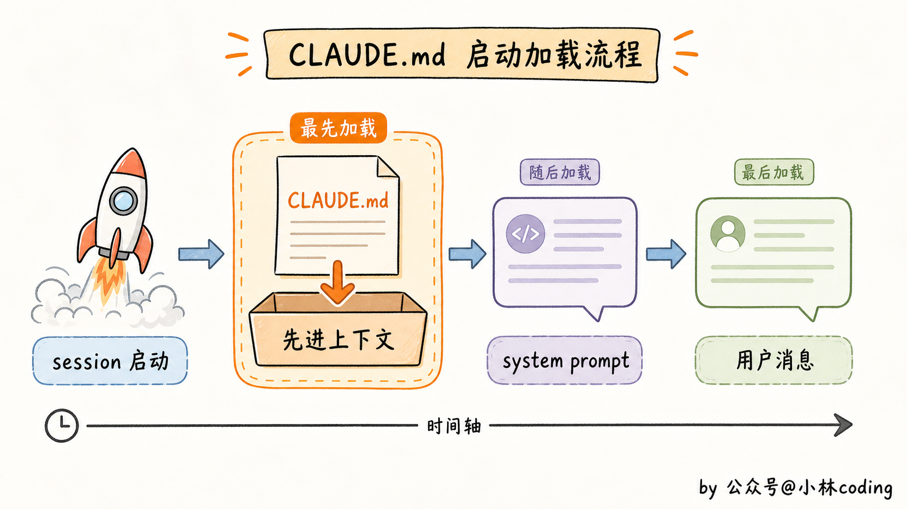
说概念可能有点虚，咱们来做个最简单的实验你就懂了。
你在项目根目录新建一个 CLAUDE.md，里面就写一行规则：
解释任何技术概念时，必须以「打个比方」开头。
保存。然后打开 Claude Code 问它一个完全无关的问题：
你：什么是 agent？ Claude：打个比方，agent 就像你雇的一个能自己干活的助理。你跟它说「帮我把上周的数据整理成报表」，它会自己拆任务、找文件、读数据、生成表格，中间用什么工具、分几步走全都它自己决定，最后把成品交给你，不用你一步步指挥……
你看，你压根没在提问里提这条规则，Claude 自己就把它套上了。
更妙的是，下次再开新 session 问别的，比如「什么是 WebSocket」，它还是会以「打个比方」开头。规则一旦写进 CLAUDE.md，相当于给 Claude 装了个稳定的「长期记忆」，每个新对话都默认带着。
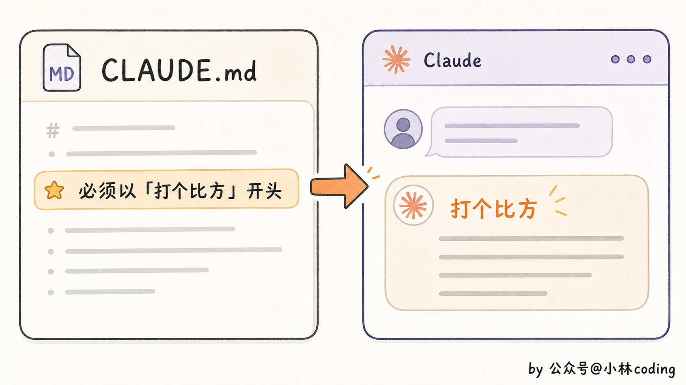
讲到这儿，你可能会冒出一个新疑问：那为啥要专门搞一个 CLAUDE.md？
我直接把规则写在 README 里不行吗？反正它俩都是 markdown 文件。
不行。两个文件长得像，但定位完全不一样。
Anthropic 官方文档里有句话点醒了我：「README 是写给人看的，CLAUDE.md 是写给 agent 看的，两个读者群体不一样，密度也不一样。」
啥意思？README 是给开发者翻的，写项目介绍、快速上手、贡献指南，长一点没事，散一点没事，反正人会跳读。
而且 Claude 默认不会主动去读 README，你不告诉它去看，它就当不存在。
CLAUDE.md 才是那个被自动加载、每次都吃 token 的「默认配置」。
（顺带说一句，token 简单理解就是模型读写时的「字符单元」，大致 1 个中文字 ≈ 1 个 token；每次请求消耗的 token 既算钱也占用上下文窗口，所以「省 token」全文会反复出现。）
那它具体是怎么被加载的？这里顺便贴一小段 Claude Code 源码让你看看背后的机制：
const dirs: string[] = []
const originalCwd = getOriginalCwd()
let currentDir = originalCwd
while (currentDir !== parse(currentDir).root) {
dirs.push(currentDir)
currentDir = dirname(currentDir)
}
这段代码出自 src/utils/claudemd.ts。逻辑很朴素：从你当前所在的目录一路往上爬到文件系统根目录，每爬一层就把目录名记下来。爬完之后再反向遍历，从根目录往下读每一层的 CLAUDE.md 和 .claude/CLAUDE.md，全部合并喂给模型。
所以一个项目可能同时有好几份 CLAUDE.md 在生效，这一点我们第四节会展开。
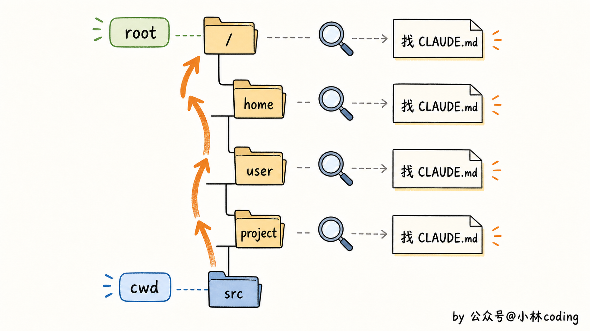
到这里你应该能感觉到 CLAUDE.md 的特殊之处了：它不是文档，是配置。是你给 Claude 配的「这个项目的预设」。
理解了这一层，接下来就要扒一个让所有人意外的事实：写得越多，效果反而越差。
02｜写多了反而废？
我刚开始用 Claude Code 的时候，是这么想的：CLAUDE.md 嘛，多写点总没坏处，规则越细，Claude 越知道我要啥。
后来看到一组数据，我直接把自己 400 多行的 CLAUDE.md 删了一半。
这个数据来自一个叫 SFEIR Institute 的技术博客。他们做了一组实测：把所有规则塞在一个 CLAUDE.md 里，控制在 200 行以内的时候，规则遵守率大概 92%。但写到 400 行往上，遵守率就肉眼可见地往下掉。
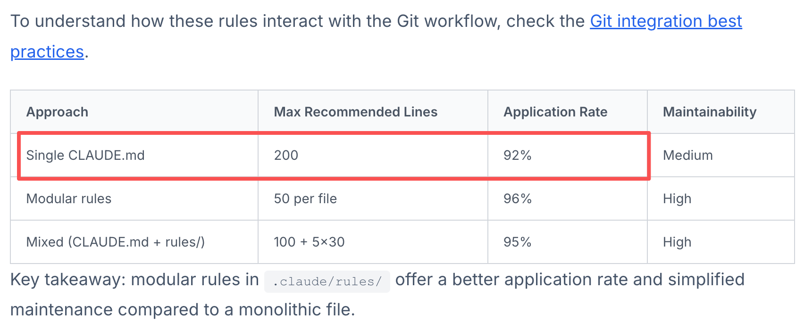
更有意思的是，如果你把 200 行拆成 5 个 30 行的模块化文件，丢到 .claude/rules/ 目录里，遵守率反而能涨到 96%。
写得多反而不听，写少了拆开反而听了。这跟我朴素的直觉完全是反的。
为啥会这样？两个原因。
第一个原因，token 经济。CLAUDE.md 每次启动都会被完整加载进上下文窗口。你写 400 行，每次请求就消耗几千 token，挤压你的对话、Claude 的思考、工具调用结果的位置。
打个比方，会议桌上摆 50 张便签，重点一目了然。换成 400 张，整张桌子都被淹没，谁也找不着重点。
第二个原因，注意力稀释。模型的注意力不是无限的，规则一多，每条规则在模型脑子里的权重就被摊薄了。社区里不少重度用户都聊过这个体感：CLAUDE.md 超过 300 行之后，「记不住」就变成常态。
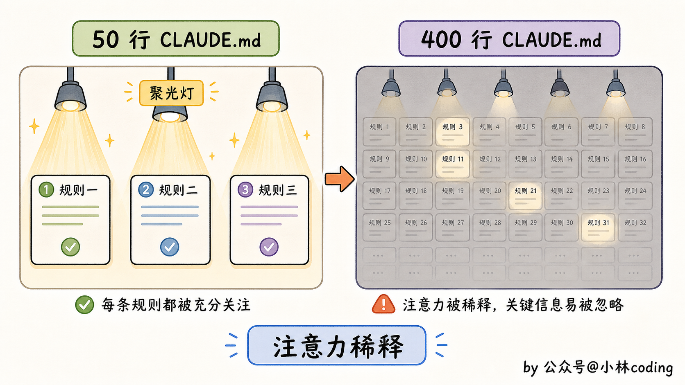
讲到这儿你可能想，那只要控制在 200 行就行了？也不全是。光控制行数还不够，得知道哪些东西根本就不该写进 CLAUDE.md。
肯定有不少人的 CLAUDE.md 里塞着大量负资产。最典型的三类反例：
第一类，复述型。 把整个项目架构文档复制粘贴进 CLAUDE.md，一写写 100 行。问题是项目架构会变，今天 React，半年后可能就 Vue 了，CLAUDE.md 里的 100 行还停留在 React 时代。正确做法是一行话指过去：「项目架构详见 docs/architecture.md」，Claude 真要看自己会去 read。
第二类，愿望型。 「我们希望测试覆盖率达到 90%」、「我们的目标是 0 bug」。这种话听着政治正确，但 Claude 没法判断「希望」和「实际」的差距，可能为了「满足愿望」给你乱补一堆没意义的测试。CLAUDE.md 里只写当下实际执行的规则，「PR 提交前必须跑 npm test」是规则，「我们希望大家多写测试」是 PUA。
第三类，术语表型。 把团队术语表往 CLAUDE.md 里搬。「Repo 指 repository、PR 指 pull request……」Claude 是个 LLM，这些通用术语它都懂。你真正需要解释的是团队特有的黑话（比如「我们说『小灰』指的是预发布环境」），但也建议放 docs/glossary.md 里。
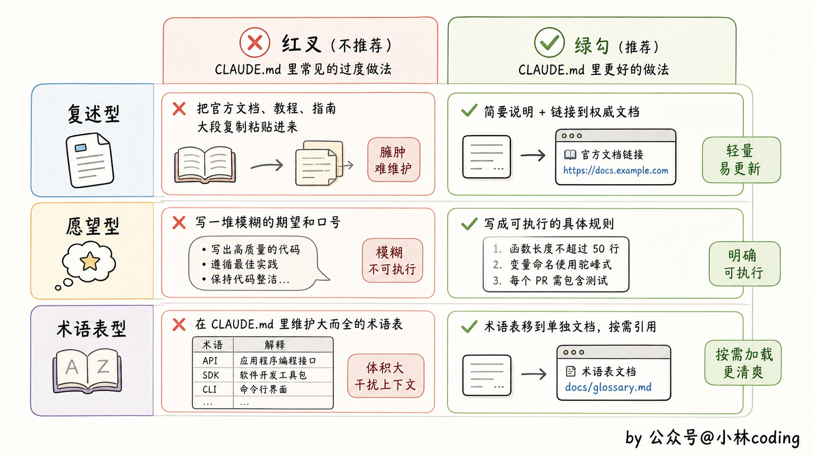
把这三类垃圾清掉，你的 CLAUDE.md 可能直接从 400 行瘦到 80 行。Claude 的表现，下一次开 session 就能感觉到。
03｜什么样的规则才真正「有效」？
清完垃圾，问题就变成：剩下那些该写的规则，到底怎么写才有用？
我先抛个问题给你猜：同样讲缩进，下面哪种写法 Claude 听得更好？
- A：「所有 TypeScript 文件用 2 个空格缩进」
- B：「代码要按规范格式化」
如果你猜 A，恭喜，答对了。但你能说清楚为什么吗？
关键差异在一个词：可验证。
A 是具体的，Claude 写完代码自己就能数：是不是 2 个空格？是不是 TypeScript 文件？这两个问题都有明确答案，它能自检。
B 是模糊的，什么叫「按规范格式化」？这个判断需要外部标准，Claude 只能猜你的偏好，猜得对就对，猜得错就错。
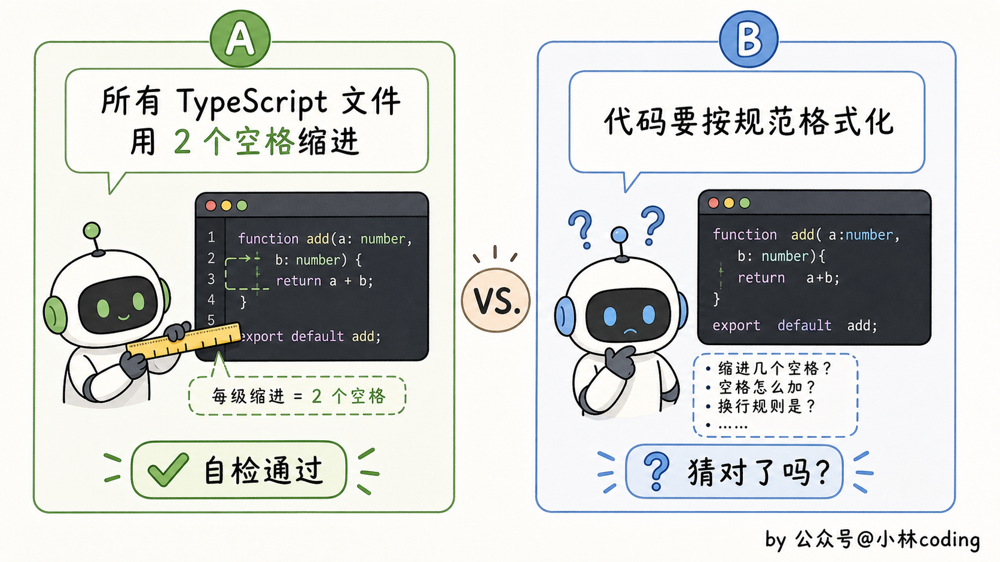
关于「啥样的规则才有效」，可以浓缩成一句话四个原则：
短、具体、告诉为什么、持续更新。
这四点挨个聊聊。
短， 上一节聊过了，呼应 200 行的黄金线。
具体， 就是上面 A 和 B 的差异。再举几个例子你感受一下：
| 模糊写法（无效） | 具体写法（有效） |
|---|---|
| 测试一下你的修改 | 提交前跑 npm test |
| 保持目录整洁 | API 处理函数放在 src/api/handlers/ 目录下 |
| 别把构建搞挂了 | 推代码前跑 npm run typecheck 检查类型 |
| 用好的命名 | 组件文件用 PascalCase（大驼峰），工具函数用 kebab-case（短横线小写） |
「具体」其实就是把抽象意图翻译成可执行命令、可定位路径、可验证规则。Claude 不是你团队里磨合三年的老同事，它没法靠默契理解你的意思。
告诉为什么， 这条乍一看像废话。规则就是规则，Claude 照做就行，还要告诉它为啥？
要的。而且这是四条里最关键的一条。
比如你写「不要在测试里写入生产数据库」，Claude 知道不能写生产库就完了。
但你加一句「因为去年有次测试不小心把 users 表清空了，出过事故」，Claude 不光知道这条规则，还知道规则的边界。
啥意思？以后你跑预发布环境（staging）测试，问它能不能写预发布数据库，它会基于「规则的本质是防生产事故」做出正确判断，而不是机械地说「规则说了不能写数据库」。
告诉「为什么」不是废话，是给 Claude 留判断空间。
持续更新， 就是把 CLAUDE.md 当活文档维护。
Claude 在哪儿犯错了两次以上，你就加一条防御规则。但同样重要的是：老规则要删。
claudeguide.io 上有句话特别戳：「错误的规则比没有规则更糟。」
想想也是，规则在那儿摆着，Claude 就会试图遵守，但规则本身已经过时了，结果就是你在花 token 买一份混乱。
讲到这儿，想多说一句：CLAUDE.md 其实没有标准模板，每个项目都该有自己的样子。
Claude Code 当初的设计理念就是「让用户随便用、随便改、随便魔改」，根本没有所谓「正确」的用法。
所以别迷信任何人的「最佳实践」，包括我这篇。把原则吃透，按你项目的实际情况裁剪。
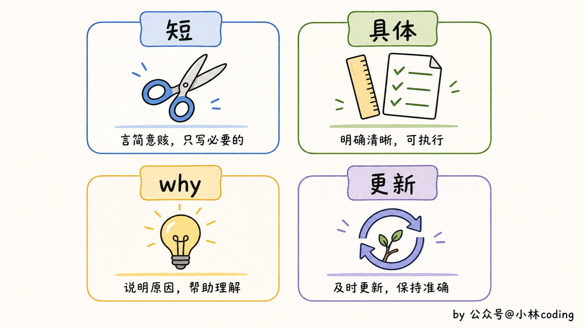
04｜ CLAUDE.md 不只是一个文件
讲到这里，你可能默认 CLAUDE.md 就是项目根目录下那一个文件。
但实际上，CLAUDE.md 是分层的。
一个项目可能有好几份 CLAUDE.md 同时在生效。
回想一下第一节那段源码做的事：从你的工作目录一路往上爬，每一层都尝试读 CLAUDE.md 和 .claude/CLAUDE.md，全部合并喂给模型。
所以一份完整的 CLAUDE.md 生态长这样：
- 项目根的 CLAUDE.md：写整个项目的通用约定（技术栈、目录、命令、硬约束），每次启动都加载，是大头。
- 子目录的 CLAUDE.md：比如前端
frontend/CLAUDE.md写组件约定。这层按需加载，Claude 工作到该目录才生效，不污染整个项目上下文。 ~/.claude/CLAUDE.md全局：跨项目的个人偏好（比如「永远用中文回复」、「我喜欢 4 空格缩进」），相当于给所有 Claude 打了同一份补丁。
文字可能还有点抽象，咱们拿一个典型的前后端分离项目举例，目录结构大概长这样：
~/.claude/
└── CLAUDE.md # 全局：用中文回复我、commit message 写中文
my-project/
├── CLAUDE.md # 项目根：技术栈、目录结构、命令、硬约束
├── frontend/
│ ├── CLAUDE.md # 前端模块：组件用函数式、状态管理用 Zustand
│ └── src/
└── backend/
├── CLAUDE.md # 后端模块：API 用 RESTful 风格、错误统一抛 AppError
└── src/
启动 Claude Code 的时候，根目录的 CLAUDE.md 和 ~/.claude/CLAUDE.md 会自动合并加载。等你让 Claude 改 frontend/ 里的代码，它才会顺手把 frontend/CLAUDE.md 也读进来。改后端代码时，前端那份规则压根不会进上下文，节省 token。
理解了这三层，你会发现玩法一下打开了。项目通用规则放项目根、模块特有规则放子目录、个人偏好放全局，各管各的，互不污染。
但还有一层更进阶的玩法：.claude/rules/ 目录。
这是 Claude Code 提供的「模块化 CLAUDE.md」机制。你不在 CLAUDE.md 里堆所有规则，而是在 .claude/rules/ 目录下每个主题一个文件。
举个例子，你的 .claude/rules/ 目录可能长这样：
.claude/
└── rules/
├── testing.md # 测试规则
├── api-design.md # 接口设计规则
├── security.md # 安全规则
└── ui-components.md # UI 组件约定
每个文件聚焦一个主题，控制在 30 行以内，结构清爽好维护。
最妙的是，每个 rules 文件可以加一段 YAML frontmatter（写在文件最顶部、用 --- 包起来的一段元信息），标注「这规则只在改某类文件的时候加载」。比如 testing.md 长这样：
---
paths: ["**/*.test.ts", "**/*.spec.ts"]
---
# 测试规则
- 用 describe / it，不用 test()
- mock 外部依赖必须用 vi.mock
- 每个测试只写一个断言
- 别用 expect.anything()，断言要精确
frontmatter 里的 paths 告诉 Claude：「这条规则只在改测试文件时才加载」，业务代码改起来你压根看不到这份规则。
同理，api-design.md 顶部可以写 paths: ["src/api/**/*.ts"]，Claude 只在改接口代码时才加载：
---
paths: ["src/api/**/*.ts"]
---
# 接口设计规则
- 所有接口走 RESTful 命名（GET / POST / PUT / DELETE）
- 返回值统一用 { data, error } 格式
- 错误码用 4 位数字（如 1001、1002），别用字符串
这就叫 path-scoped rules（路径作用域规则）。Claude 只在工作到匹配路径的文件时才把这份规则加载进上下文。改业务代码的时候根本看不到测试规则，改接口的时候也不会看到 UI 组件约定，省下来的 token 全留给真正有用的对话。
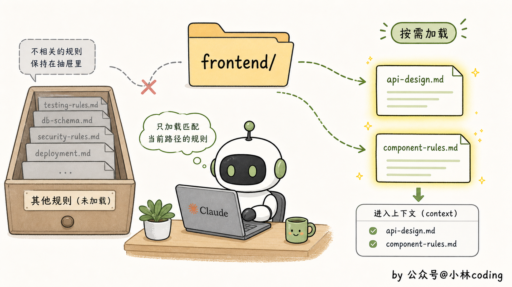
打个比方，公司有总公司手册、各部门有部门手册、每个岗位有岗位手册。你不会让每个新人都把所有手册随身带着，对应业务的时候才翻对应的手册。
这种模块化拆分的好处就是上一节那个 96% 数据：少加载、按需加载，效果反而比一坨更好。
我之前看到有海外开发者的方案把这套生态推到了极致：
CLAUDE.md 起步；长了拆
rules/；高频工作流写到commands/；可复用能力封装成skills/。
CLAUDE.md 只是入口，后面还有 commands（自定义命令）和 skills（可复用能力包）两套机制。
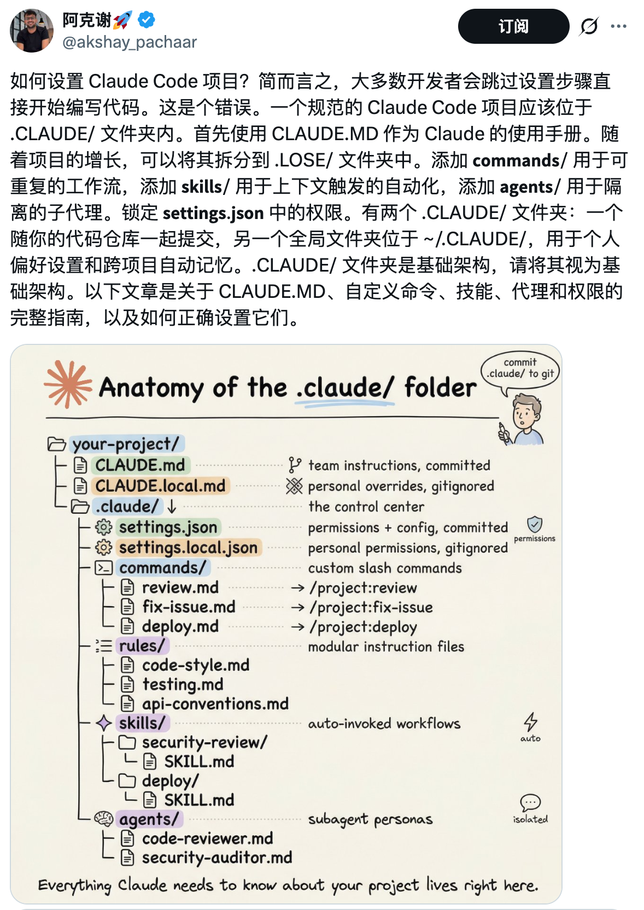
讲到这儿，可能有读者要问了：
我用的不是 Claude Code，而是 OpenAI 的 Codex，前面这一通是不是跟我没关系？
也不是。
Codex 那边也有一份自己的「团队约定」，只不过文件名不叫 CLAUDE.md，叫 AGENTS.md。
它的作用、写法、加载机制跟 CLAUDE.md 几乎一模一样。你前面学的所有原则，200 行黄金线、具体可验证、告诉 why、持续更新，一条都不用扔，照搬到 AGENTS.md 里就行。
那要是你的项目同时用 Claude Code 和 Codex 呢？两份文件维护成两套，规则一改要改两遍，妥妥的负担。
这里有个特别巧的做法：把所有规则写在 AGENTS.md 里，CLAUDE.md 里只留一行：
@AGENTS.md
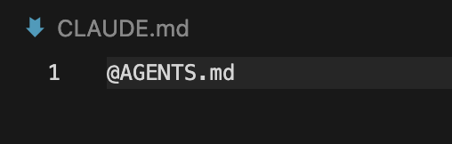
CLAUDE.md 里的 @文件名 是个引用指令。Claude Code 启动加载 CLAUDE.md 时，看到 @AGENTS.md，会顺着这条引用把 AGENTS.md 的内容也读进来；Codex 那边本来就直接读 AGENTS.md，规则自然也拿到。
一份文件、两个工具、零重复维护。
讲完跨工具这茬，最后提一个容易被忽略的坑：规则之间会打架。
官方文档原话是：「如果两条规则互相矛盾，Claude 可能会随便挑一条。」模型又不是律师，没法判断哪条优先级更高。所以分层之后，得定期 review，把过时的、冲突的规则清掉。我自己的习惯是每 1 到 2 周扫一次。
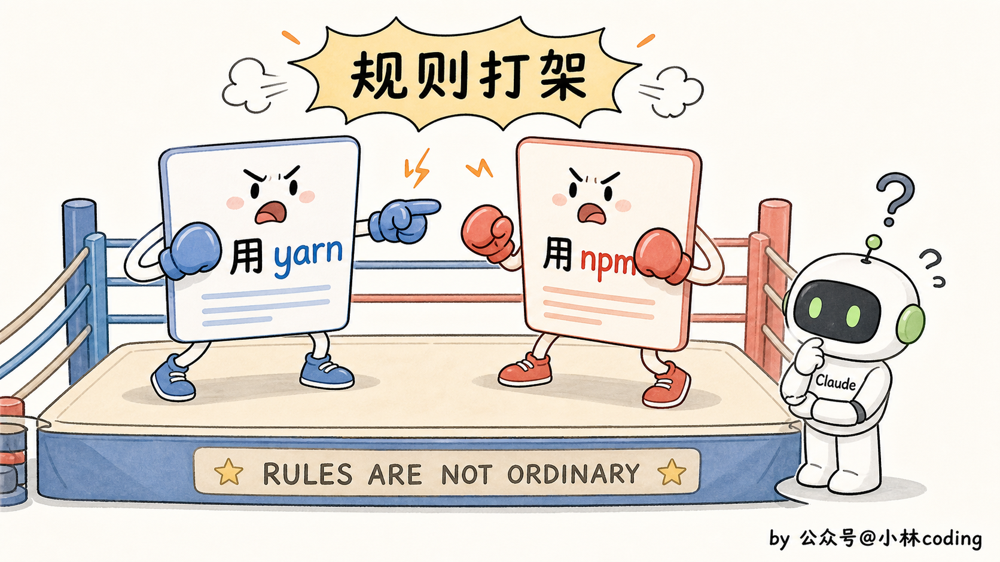
05｜/init 起步、/memory 维护
讲完 CLAUDE.md 怎么写、怎么分层，最后一个绕不开的话题是：怎么把它跑起来。
CLAUDE.md 并不是自动创建的，而是需要我们自己手动创建的。
如果你项目里压根还没 CLAUDE.md，第一步是什么？答案是 /init。
在 Claude Code 里输入 /init，Claude 会自动扫一遍你的代码库，把分析出来的技术栈、目录结构、常用命令起个草稿。Anthropic 官方文档里有句话：「五分钟时间，永久受益。」
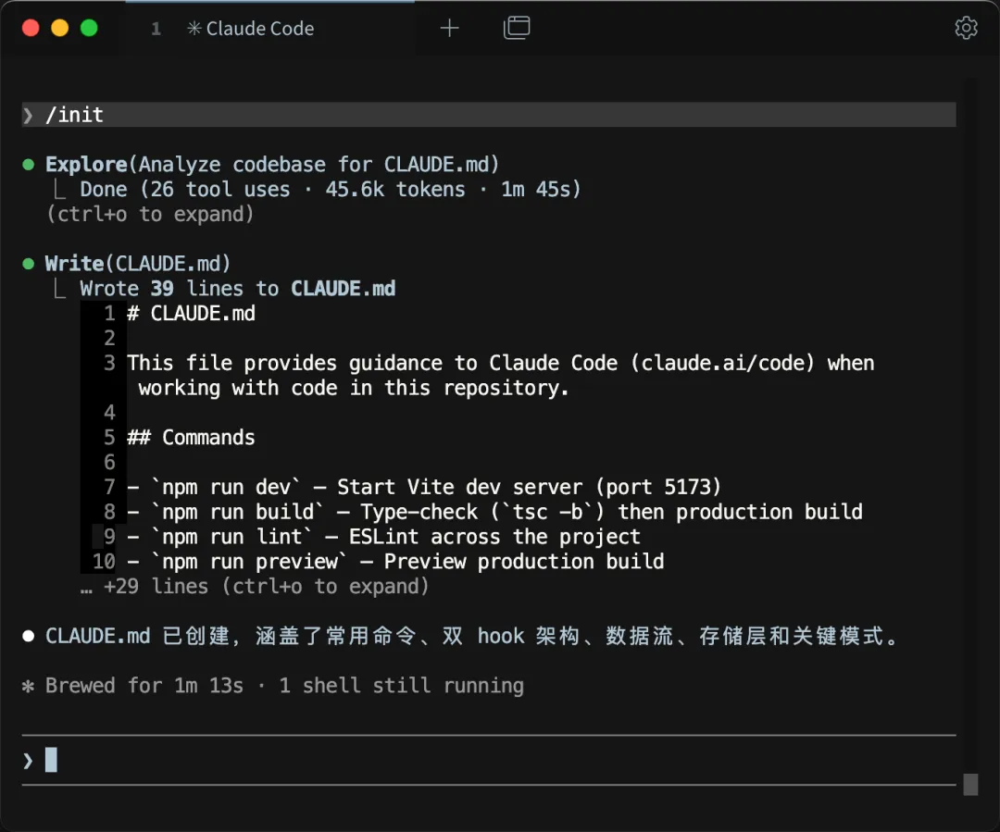
我实测过，/init 起的草稿质量出乎意料地好。当然不完美，你得 review 一遍删掉不准的、补上漏掉的，但起点已经比从空文件开始高出几个台阶。
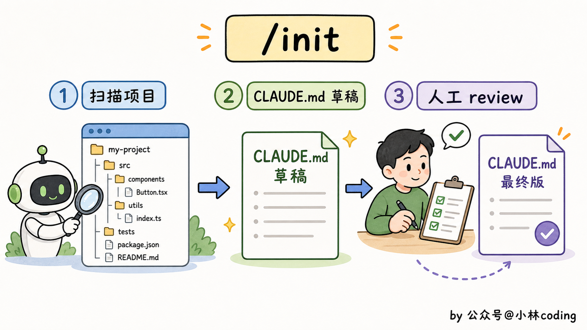
项目跑起来之后，规则怎么补充？最经典的工作流是这样：Claude 在哪儿犯错了，就加一条防御规则。
但你不需要手动打开 CLAUDE.md 编辑，Claude Code 提供了 /memory 命令。
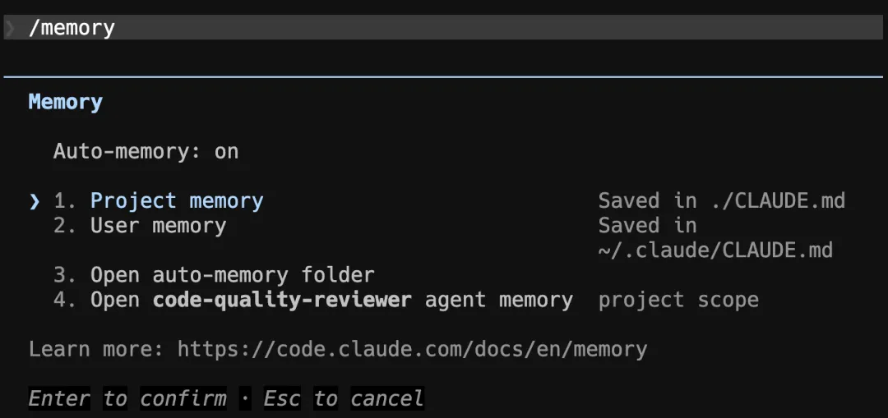
session 中途想加规则，直接输入 /memory 会弹出 CLAUDE.md 让你直接改。或者你跟 Claude 说一句「记一下这条规则」，它会自动追加到合适的 CLAUDE.md 文件里去。
claudeguide.io 给了一个特别实用的规则触发标准：Claude 错两次以上，就加一条新规则。 一次可能是偶发，两次说明规则有缺。再不写就会一直被它坑。
还有一个常被忽略的命令配合：Plan Mode。
复杂任务的时候，按 Shift+Tab 两次切到 Plan Mode，Claude 不直接动手写代码，而是先出一份计划给你看，确认了再执行。
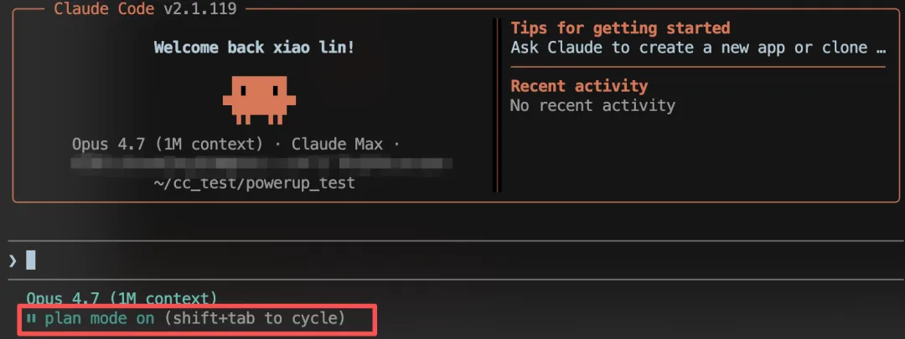
为啥这玩意儿要跟 CLAUDE.md 配合讲？因为 Plan Mode 出计划的时候，会把你 CLAUDE.md 里的规则全考虑进去。一份好的 CLAUDE.md 直接决定了计划的质量，计划出得好不好，决定了最终代码写得对不对。
Claude Code 官方一直在推 Plan Mode 的用法，社区里也基本形成了共识：动手写代码之前先切 Plan Mode，尤其是改动跨多个文件的时候。
我自己实测下来，对 3 个文件以上的改动，Plan Mode 配合 CLAUDE.md 这套组合质量提升肉眼可见。
06｜可以参考的模板
讲了这么多原则和反例，最后给你一份可以参考的模板：80 行以内、6 段式结构、每段都加了点注释。
这套结构参考了 claude-codex.fr 技术博客里的 6 段式建议，然后稍微做了精简：
# CLAUDE.md
## 1. Project Overview
（2-3 行讲清这是个啥项目，技术栈 + 定位）
- 这是一个面向 B 端的订单管理系统
- 技术栈：TypeScript + Next.js 14 + PostgreSQL
- 部署：Vercel + Supabase
## 2. Commands
（最常用的几个命令，Claude 会直接执行）
- 安装依赖：`pnpm install`
- 启动开发：`pnpm dev`
- 跑测试：`pnpm test`
- 类型检查：`pnpm typecheck`
- Lint：`pnpm lint`
## 3. Architecture
（三句话讲完架构，不要展开）
- 前端页面在 app/（App Router）
- API 路由在 app/api/
- 数据库 schema 在 prisma/schema.prisma
- 详细架构见 docs/architecture.md
## 4. Conventions
（团队真实在用的约定）
- 组件文件用 PascalCase（UserCard.tsx）
- 工具函数用 kebab-case（format-date.ts）
- API 返回统一用 { data, error } 格式
- 错误处理用 Result type，不要 throw
## 5. Hard Constraints
（这部分要严，Claude 越界一次就要补）
- 不要写入 production 数据库（去年事故）
- 不要修改 prisma/migrations/ 下已经合入的 migration
- 不要把 .env 文件加入 git
- 所有 API 路由必须过 requireAuth() middleware
## 6. Gotchas
（每个新人都踩过的坑）
- 跑 dev 之前要先 pnpm db:push 同步 schema
- macOS 上 Prisma 偶发崩溃，重启 dev server 就好
- Vercel 部署日志在 dashboard 里看，不在终端
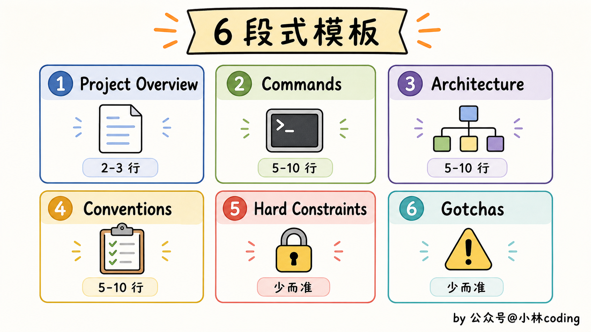
这份模板里有几个细节值得留意。
第一，总行数 50 行左右，远低于 200 黄金线，给后续加规则留了空间。
第二，Architecture 段故意写得短，只指住址不复述详情，避开第二节讲的「复述型」陷阱。
第三，Hard Constraints 写了 why（「去年事故」），呼应第三节的「告诉为什么」原则。
第四，Gotchas 部分价值最高，因为这些坑都是踩出来的经验，Claude 没法从代码里推断。
你照这份模板改，别从头复制。先抄结构，再填你项目的内容。复制完整内容只会让你换了个壳，规则还是不准。
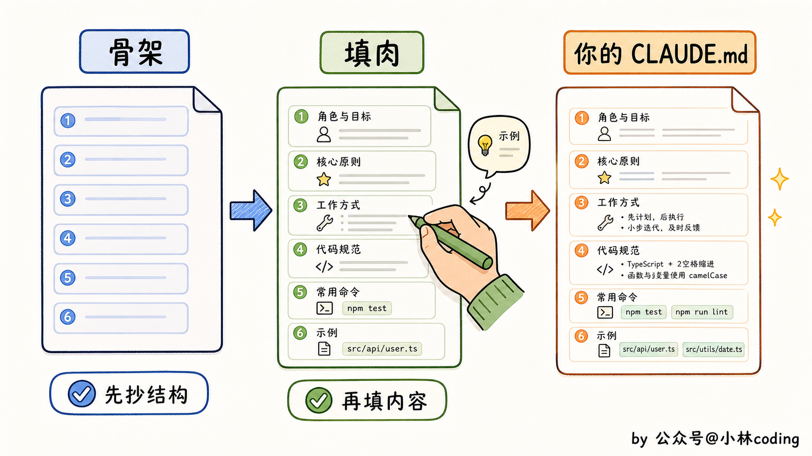
收尾：3 句话精华
文章讲了一堆，咱们最后做个总结。
如果你只能从这篇文章带走三句话，那就是这三句：
第一，CLAUDE.md 是给 Agent 的入职手册，不是给人的 README。写之前先问自己：这句话是给人看的，还是给 Claude 看的？给人看的留给 README。
第二，200 行是黄金线，每行都吃 token，多写不如不写。复述型、愿望型、术语表型这三类内容直接删，瘦下来 Claude 反而更听话。
第三，具体可验证、告诉 why、持续更新，三条铁律压过一切技巧。哪条规则都别忘了这三个核心。
如果你面试被问到对 CLAUDE.md 的理解，可以这么答：
「CLAUDE.md 每次启动都会被完整加载进上下文，规则一多反而稀释模型注意力。社区实测数据是 200 行 92% 遵守率，400 行掉到 70%。我的做法是项目根 CLAUDE.md 控制在 80 行以内，按模块拆到
.claude/rules/下用 path-scoped 加载，配合/init起步和/memory维护，规则遵守率明显上来了。」
我们下篇见啦。
参考资料
- Anthropic 官方文档：CLAUDE.md 使用指南，https://docs.anthropic.com/en/docs/claude-code/claude-md
- Anthropic Help Center：Give Claude context with CLAUDE.md and better prompts，https://support.claude.com/en/articles/14553240
- claudeguide.io：How to Write Effective CLAUDE.md Files (With 12 Real Examples)，https://claudeguide.io/claude-md-effective-patterns
- claude-codex.fr：Mastering CLAUDE.md（6 段式结构推荐来源），https://claude-codex.fr/en/prompting/claude-md/
- SFEIR Institute：The CLAUDE.md Memory System Deep Dive（200 行 92%、模块化 96% 实测数据来源），https://institute.sfeir.com/en/claude-code/claude-code-memory-system-claude-md/deep-dive/